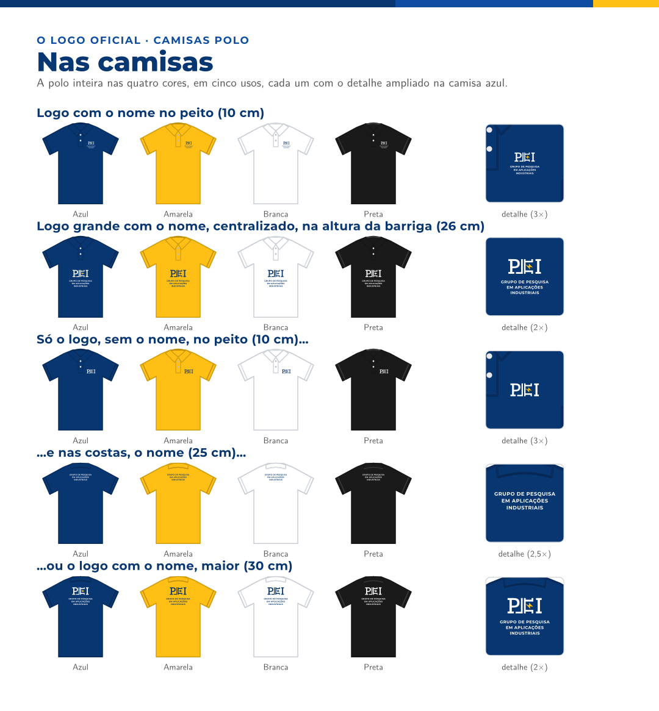
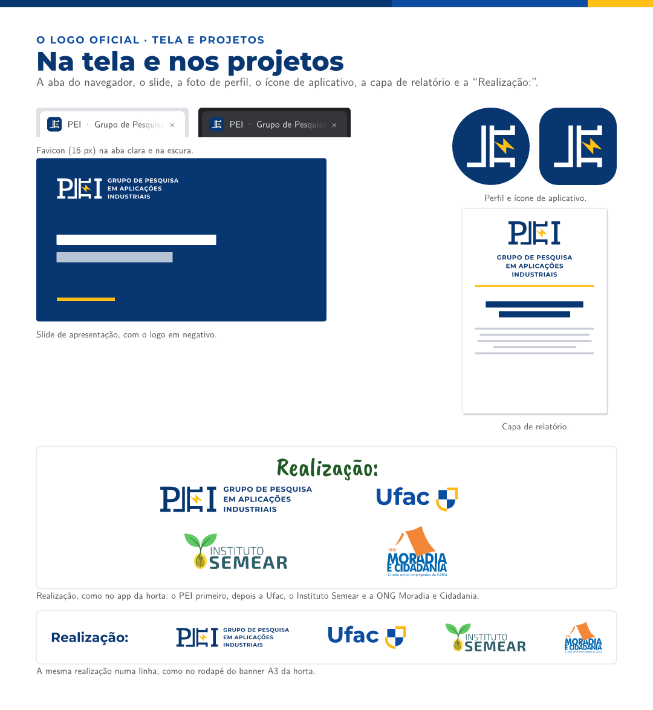
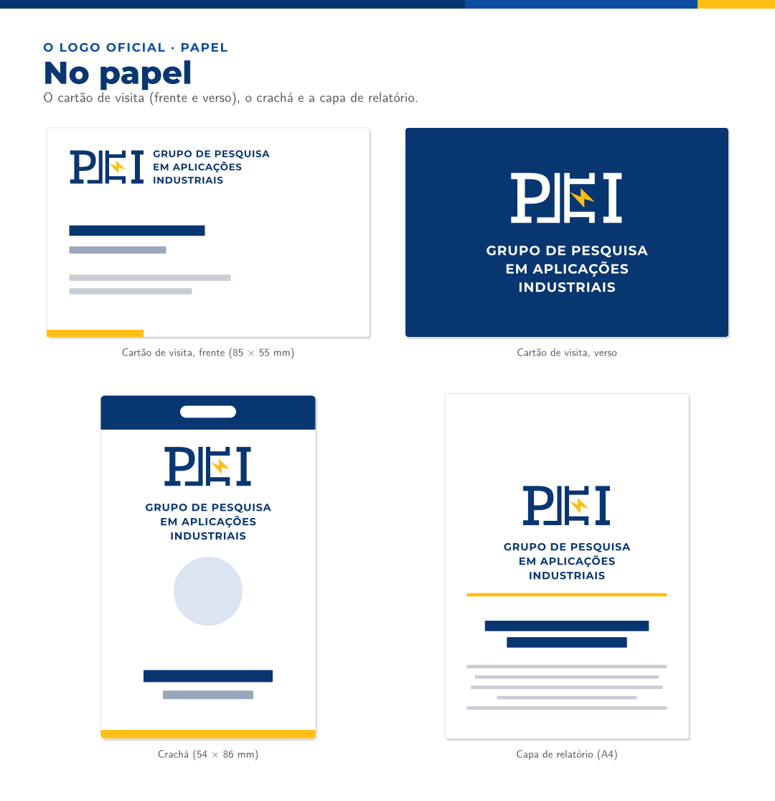

VOTAÇÃO ENCERRADA
O novo logo do PEI
O logo oficial é o MOSFET com raio, na versão Alt. Veja o resultado da votação, o logo em uso e baixe o manual e os arquivos.
RESULTADO
Resultado da votação
Em cada etapa, a pessoa podia marcar mais de uma finalista; a barra soma todas as marcações das 20 etapas. Obrigado a todos que votaram!

INFOGRÁFICO
O logo oficial em todos os usos

MANUAL E ARQUIVOS
Baixe o logo
O kit tem o logo em cinco versões de cor (colorida, negativa, mono azul, mono e mono negativa), nas quatro formas (horizontal, vertical, símbolo e ícone), em SVG, PDF e PNG, e o manual de identidade.
Kit completo (zip)
Tudo: SVG, PDF, PNG, ícones e o manual. 2,9 MB.
Manual de identidade (PDF)
Conceito, versões, cores, tipografia, área de proteção, usos incorretos e aplicações.
Só os SVG (zip)
Vetor, de qualquer tamanho: site, Inkscape, Illustrator, Canva.
Só os PNG (zip)
150, 300 e 600 ppi, com fundo transparente ou branco, e os ícones.
Só os PDF (zip)
Vetor, para a gráfica e para o LaTeX ou o Typst.
Todos os arquivos, um a um
O logo
| Forma | Cor | Vetor | PNG |
|---|
Ícones, aplicativo e perfil



O carrossel do anúncio
Sete slides em 1080 × 1350 (4:5), na ordem. Arraste para o lado para ver todos.
Legenda sugerida
O PEI tem logo novo! ⚡
Escolhido em votação pelo grupo, o novo logo traz a sigla com o E desenhado como um transistor MOSFET e um raio dourado no canal: a energia que a engenharia controla.
Obrigado a todos que votaram!
#PEI #Ufac #EngenhariaElétrica #Pesquisa